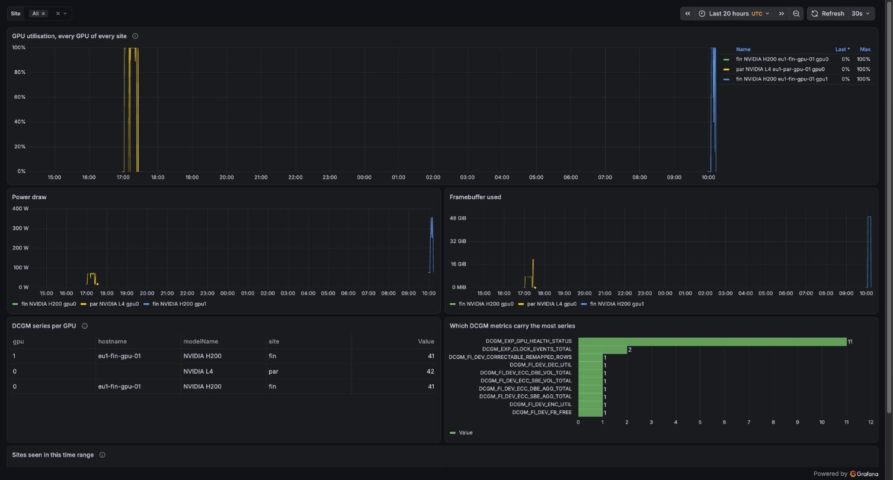
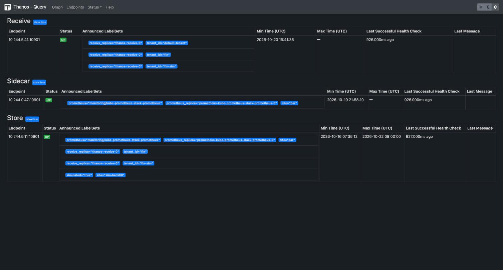
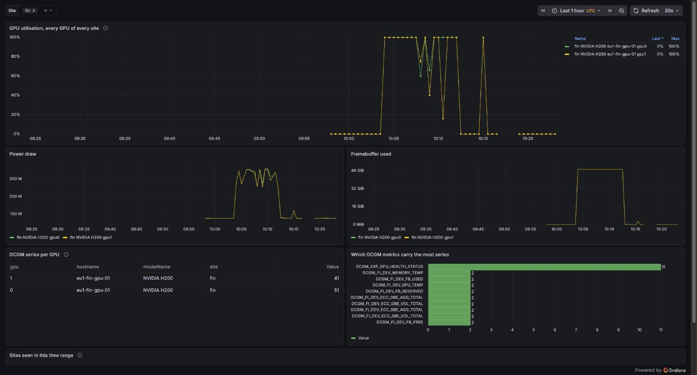
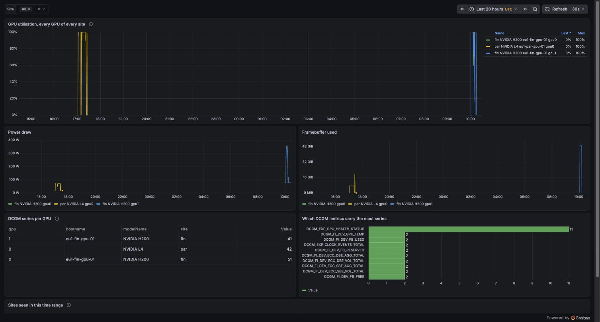

Observability with Thanos: one view of every GPU, across sites
The problem
Operators need one place to see every GPU of both sites. The Finland site only exists while its H200s are rented, so its metrics must stay readable after the site is deleted.
What I built
flowchart LR
subgraph fin["Finland (only while rented)"]
fprom["Prometheus"]
end
subgraph par["Paris (permanent)"]
pprom["Prometheus + sidecar"]
recv["Thanos Receive"]
q["Thanos Query"]
bucket[("Object storage<br/>Garage bucket")]
graf["Grafana"]
end
fprom -- "pushes over the internet,<br/>mutual TLS" --> recv
pprom --> bucket
recv --> bucket
q --> pprom
q --> recv
q --> bucket
graf --> q- Finland pushes, Paris never reaches in. Paris can't query a site that no longer exists, so Finland sends its metrics as they're produced (remote write).
- The certificate names the sender. Finland can only write as tenant
fin. - Paris keeps working on its own. Its Prometheus and alerts don't depend on the worker that runs Thanos (ADR 0009 compares Mimir and VictoriaMetrics).
What happened
| Moment | Result |
|---|---|
| Finland site starts (22 October) | Its series appeared in Paris 4 s after its Prometheus was ready |
| Two H200s running | 40 DCGM series per GPU, the same as the L4; 0 failed samples |
| One H200 split by MIG | Each slice got its own series, attributed to the tenant pod using it |
| Finland site deleted | Paris still served it: 4,676,183 samples sent over the run, 0 lost |
Lessons
- Asking about a deleted site needs a look back. A "now" query sees nothing 5 minutes after the last sample; queries and dashboards have to cover the run's time.
- MIG breaks naive GPU counting (not fixed yet): utilisation isn't reported per slice, so the dashboard showed 1 H200 instead of 2, and 13 instead of 2 after deletion.
- Capacity: 40 to 51 series per GPU means 400,000 to 510,000 series for 10,000 GPUs, before pod churn: arithmetic from three GPUs, not a load test.
In one sentence
The Finland site pushed every GPU metric to Paris over mutual TLS and its history outlived the site itself, with no sample lost; the run also showed how MIG trips up GPU counting.
flowchart LR
subgraph fin["Finland (exists only while its GPUs are rented)"]
fprom["Prometheus<br/>site=fin"]
end
subgraph par["Paris (permanent)"]
pprom["Prometheus + Thanos sidecar<br/>site=par, control plane"]
recv["Thanos Receive<br/>CPU worker, NodePort 30291"]
q["Thanos Query"]
sg["Store gateway"]
comp["Compactor<br/>downsampling"]
bucket[("Garage bucket thanos")]
graf["Grafana<br/>cross-site dashboard"]
end
fprom -- "remote write, mutual TLS<br/>client CN = tenant" --> recv
pprom -- "2 h blocks" --> bucket
recv -- "2 h blocks" --> bucket
comp <--> bucket
sg --> bucket
q --> pprom
q --> recv
q --> sg
graf --> qSetup
- Port 30291 on the Paris CPU worker open only to the Finland node addresses; from my laptop it doesn't answer. The CA is generated in the cluster and never in Git.
fin-sim, a SIMULATED second Prometheus in Paris posing as Finland, ran the whole write path before any H200 was rented.
Paris hub, 21 October
| Check | Result |
|---|---|
| Stores in Query | Receive (fin-sim, default-tenant), the Paris sidecar, the store gateway |
| Deduplication, two replicas | 2 + 2 up series without, 2 with |
| Paris sidecar uploads | 14 blocks every 2 h since 20 October, 0 failures |
Downsampling (SIMULATED backfill, site="sim-backfill") |
61 blocks compacted, two 5-minute blocks written (bucket) |
| Last block on shutdown | Receive flushed and uploaded a 12 s fin-sim block when the worker powered off (cmd/thanos/receive.go, v0.42.4) |
Finland over the internet without a GPU, 21 October
A CPU-only Finland control plane (the first order failed on the provider's side; the
retry ran 15:33 to 15:40 UTC): first site="fin" series in Paris at 15:39:11, 45,032
samples, 0 failed, still served 16 minutes after deletion
(during,
after).
Finland H200s, 22 October (UTC)
$ make thanos-capture MODE=fin
# capture-thanos.sh fin, 20261022T095211Z, laptop clock, UTC. git 17ecc08
...
## Sites and tenants seen (now)
# count by (site, tenant_id) (up) (dedup=true)
{site="fin", tenant_id="fin"} 11
{site="fin-sim", tenant_id="fin-sim"} 2
{site="par"} 27
...
{__name__="prometheus_remote_storage_samples_failed_total"} 0
{__name__="prometheus_remote_storage_samples_retried_total"} 0
{__name__="prometheus_remote_storage_samples_total"} 43637
...
Full capture. Prometheus Ready at 09:51:26, first series in Paris at 09:51:30. DCGM series arrived at 09:58:10, after dcgm-exporter waited about 3 minutes for the DCGM host engine (finding). With both H200s whole: 40 series each, Finland head 52,662 series, 733,067 samples sent, 0 failed (capture).

Over 20 hours: the Paris L4's training run (left) and the two H200s (right). The L4
row has no hostname: my rule grouped by Hostname at the time, a label dcgm-exporter
doesn't set; corrected after.

Query's Stores page: Receive holds tenant fin next to fin-sim.
After one H200 was split by MIG
$ make thanos-capture MODE=fin
# capture-thanos.sh fin, 20261022T102230Z, laptop clock, UTC. git 17ecc08
...
## GPUs per site and model (now)
# count by (site, modelName) (DCGM_FI_DEV_GPU_UTIL) (dedup=true)
{modelName="NVIDIA H200", site="fin"} 1
...
## DCGM series per GPU (recording rule)
# max by (site, modelName, hostname, gpu) (max_over_time(gpu:dcgm_series:count[3h])) (dedup=true)
{gpu="0", hostname="eu1-fin-gpu-01", modelName="NVIDIA H200", site="fin"} 51
{gpu="1", hostname="eu1-fin-gpu-01", modelName="NVIDIA H200", site="fin"} 41
...
Full capture,
labels on Finland's Prometheus.
GPU0's 51 = 11 device series + 20 per MIG slice, each labelled GPU_I_ID and
GPU_I_PROFILE="MIG 3g.71gb" and attributed to its tenant pod.

Finland, six minutes after the MIG split: GPU0's 51 series show as one row.
After the Finland site was deleted (10:27:57 UTC)
$ make thanos-capture MODE=after
# capture-thanos.sh after, 20261022T102814Z, laptop clock, UTC. git 17ecc08
...
## Sites and tenants seen (last value within 3 h)
# count by (site, tenant_id) (last_over_time(up[3h])) (dedup=true)
{site="fin", tenant_id="fin"} 19
{site="fin-sim", tenant_id="fin-sim"} 2
{site="par"} 28
...
## GPUs per site and model (last value within 3 h)
# count by (site, modelName) (last_over_time(DCGM_FI_DEV_GPU_UTIL[3h])) (dedup=true)
{modelName="NVIDIA H200", site="fin"} 13
...
{__name__="prometheus_remote_storage_samples_failed_total"} 0
{__name__="prometheus_remote_storage_samples_retried_total"} 0
{__name__="prometheus_remote_storage_samples_total"} 4676183
Full capture. Last Finland sample at 10:27:31, 26 s before deletion.

After deletion: the H200 series are still there, read from Receive in Paris.
Known gaps, not fixed yet
| Symptom | Cause | Fix |
|---|---|---|
| "1 H200" after MIG | DCGM_FI_DEV_GPU_UTIL isn't reported for MIG slices |
Count GPUs by gpu and hostname from a field every GPU reports |
| GPU0 shows one 51, not two slices | The rule groups by the parent GPU's UUID | Group by GPU_I_ID too |
| "13 H200s" after deletion | last_over_time counts every series seen in 3 h; pods add new series |
Same as the first fix |
| Empty "now" query after deletion | Instant queries look back only 5 minutes | Already fixed: MODE=after uses last_over_time(...[3h]) |
Series per GPU, for capacity
| GPU | DCGM series |
|---|---|
| L4 idle / under training | 40 / 41 (power_cap clock event appeared) |
| H200 whole | 40, then 41 under load |
| H200 split into two MIG slices | 51 |
Counts move with clock-event reasons and with pod labels on busy GPUs, so plan on the
maximum over a busy period (max_over_time(gpu:dcgm_series:count[...])). DCGM was 91 of
Finland's 66,491 series; the rest came from the API server and kubelets
(L4 capture).
Limits
- One Receive, no hashring or replication: a single point of failure on the write path.
- Cardinality at 1,000 or 10,000 GPUs is extrapolated, not load-tested.
- Downsampling shown on SIMULATED blocks only; the Finland site's last block in the bucket isn't listed yet.